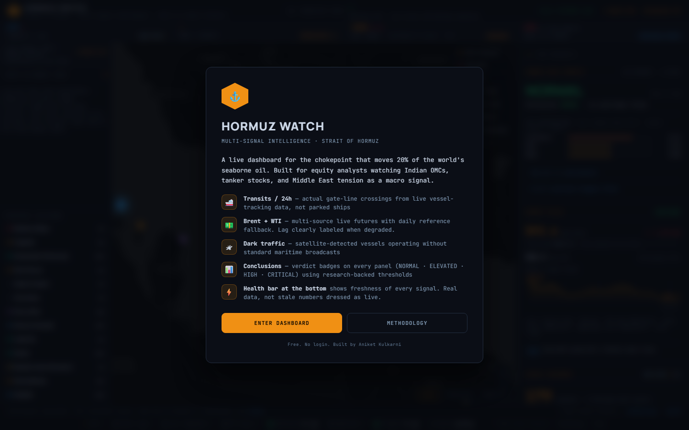
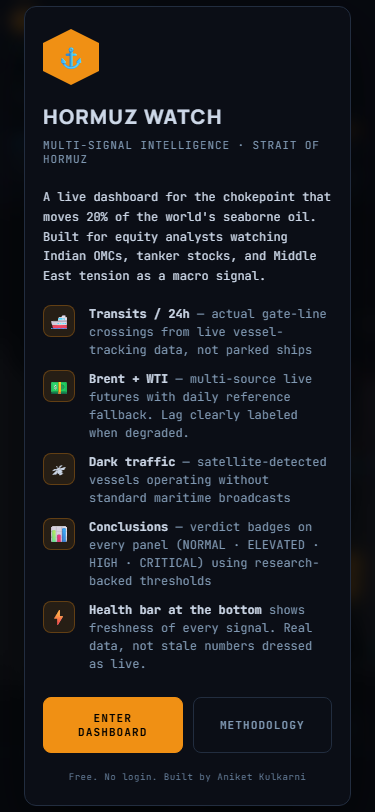

2026-05-29 · headless-measured against the current live dashboard · builds on the 2026-05-22 cognitive-load audit + redesign-v1 prototype · no code changed.


Full-page desktop capture: desktop-full.png (same folder).
| Metric | Desktop | Mobile | Design verdict |
|---|---|---|---|
| Heading hierarchy (H1/H2/H3) | 0 / 0 / 0 | 0 / 0 / 0 | No semantic structure — nothing to skim, bad for SEO + a11y + scan-path |
| Cards / tiles | 30 (23 rblock + 5 sig + 2) | 30 | All ~equal visual weight = no priority signal |
| Distinct font sizes | 14 | 10 | No modular scale; ad-hoc per component |
| Text at 8px | 6 elements | 1 | Below legibility floor — stragglers remain after prior fixes |
| Text at 9–10px | 315 elements (~73%) | 63 | Overwhelming density; terminal-grade |
| Largest above-fold text | "179" @ 30px (a count) | ⚓ icon @ 22px | Dominant element is NOT the verdict — hierarchy misdirects |
| Verdict visible above fold? | Yes (top 175px) | Yes | Visible but not dominant — out-shouted by "179" |
Reading: almost everything is 9–11px. There's a 12px→16px→30px cliff with nothing between. A proper scale would be ~6 tiers; this is 14 sizes clustered at the bottom.
Measured against established product-design principles + the project's own Design OS.
| Principle | Verdict | Evidence |
|---|---|---|
| Visual hierarchy (most-important dominates) | FAIL | Dominant text is "179", not the verdict |
| Information architecture (heading structure) | FAIL | 0 H-tags; flat 30-card list |
| Progressive disclosure (hide detail until asked) | WEAK | All 30 cards fully expanded always; reference data (LNG/fert/CAPE) shown inline |
| Gestalt grouping (related items visually clustered) | WEAK | No section dividers; Markets/Geopolitics/Conditions visually identical |
| Recognition over recall (self-explaining tiles) | WEAK | Numbers without inline meaning (e.g. "BDTI 2088" — what's good/bad?) |
| F-pattern / scan-path (top-left priority) | WEAK | Cargo ticker top-left is decoration; verdict mid-right panel |
| Colour semantics (one meaning per colour) | WEAK | Green/red = verdict severity AND price-delta direction (opposite meanings) |
| Typographic scale (modular) | WEAK | 14 ad-hoc sizes vs ~6-tier scale |
| Legibility floor (≥11px body on mobile) | PARTIAL | Mostly fixed; 8px stragglers remain |
| Tabular numerals on numbers | PASS | Applied throughout ✓ |
| Honest data states (no fake values) | PASS | —/STALE/WEB FEED/dim + integrity badge ✓ |
| SEBI compliance (disclaimer/3-layer/no-recommend) | PASS | Intact ✓ |
| Mobile responsive (no overflow/overlap) | PASS | 6-pass mobile audit clean ✓ |
| 2026-05-22 finding | Status now |
|---|---|
| No H1/H2/H3 system | STILL TRUE — measured 0/0/0 |
| 30 tiles at equal weight | STILL TRUE — measured 30 |
| Verdict buried, not hero | STILL TRUE — "179" dominates, not verdict |
| 14 ad-hoc font sizes → need 6-tier scale | STILL TRUE — measured 14 |
| Colour collision (verdict vs price-delta) | STILL TRUE |
| Conditions card mixes weather+aircraft+seismic | STILL TRUE |
| 8px illegible text | MOSTLY FIXED — 6 stragglers remain |
| Signal-bar mobile swipe discoverability | IMPROVED — fade-mask shipped |
| Wrong-but-fresh data visible | FIXED — integrity badge + confidence-gating |
Conclusion: the data-integrity layer got fully solved this month. The design/IA layer is essentially untouched — the prototype was built but never ported. That's the gap.
All of these are already designed in redesign-v1-2026-05-22.html. This is a port-and-verify job, not new design. Each ships with a headless self-test.
Biggest cognitive-load relief. Verdict becomes the dominant element; sections get H2 headers (Markets / Strait activity / Geopolitics / Conditions). ~10× ROI.
Merge Brent+WTI into one Crude card; fold weather/aircraft/seismic into one Conditions tile; move LNG/fert/CAPE to a collapsed Reference section. Group under the H2s.
One modular scale; mono reserved for numbers only; kill the 8px stragglers. Lifts the 9–10px density.
Reserve green/amber/red for verdict severity ONLY; price deltas switch to blue↑/orange↓ so one colour never means two things.
Each number gets a micro-context ("BDTI 2088 · normal range 800–1500" or a sparkline). Recognition over recall.
Deferred until 1–4 land, then re-measure. Likely: map → header strip, analytics get the dominant surface. Don't resize before the hierarchy fix (more space for noise = more noise).
Pick what to port from the prototype (each independent, ordered by ROI):
Recommendation: approve 1+2+3 first (80% of the cognitive-load relief), each ported to index.html from the prototype with a headless self-test (desktop + mobile) before you see it live. Then 4+5. Defer 6.
audit 2026-05-29 · headless-measured · no code changed · awaiting per-section approval